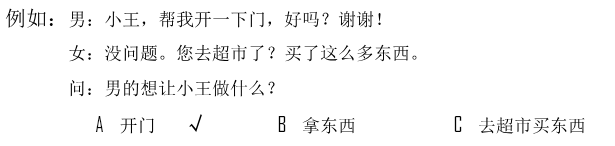
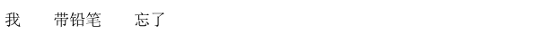

🎧 Phần nghe · Câu 1–40
Bấm phát để bắt đầu nghe. Thời gian làm bài bắt đầu khi bạn nghe hoặc chọn đáp án.
Nghe · Phần 1 · Câu 1–5
Nghe và chọn hình A–F phù hợp.

Nghe · Phần 1 · Câu 6–10
Nghe và chọn hình A–E phù hợp.
Nghe · Phần 2 · Câu 11–20
Nghe và chọn ✓ (đúng) hoặc × (sai).

Câu 11
★他以前就认识李医生。
Câu 12
★那家店面条儿一般。
Câu 13
★越着急越容易出错。
Câu 14
★那些灯晚上不开。
Câu 15
★张晴还没开始上班。
Câu 16
★他想去医院。
Câu 17
★他选择去北京读书。
Câu 18
★客人都来了。
Câu 19
★月亮离我们更近。
Câu 20
★他觉得国家图书馆很安静。
Nghe · Phần 3 · Câu 21–30
Nghe và chọn đáp án A, B hoặc C.

Câu 21
Câu 22
Câu 23
Câu 24
Câu 25
Câu 26
Câu 27
Câu 28
Câu 29
Câu 30
Nghe · Phần 4 · Câu 31–40
Nghe hội thoại và chọn đáp án A, B hoặc C.

Câu 31
Câu 32
Câu 33
Câu 34
Câu 35
Câu 36
Câu 37
Câu 38
Câu 39
Câu 40
Đọc · Phần 1 · Câu 41–45
Chọn câu A–F phù hợp để ghép với từng câu.
Đọc · Phần 1 · Câu 46–50
Chọn câu A–E phù hợp để ghép với từng câu.
Đọc · Phần 2 · Câu 51–55
Chọn từ A–F điền vào chỗ trống.
Đọc · Phần 2 · Câu 56–60
Chọn từ A–F điền vào chỗ trống của hội thoại.

Đọc · Phần 3 · Câu 61–70
Đọc đoạn văn và chọn đáp án đúng.

Câu 61
昨天是中秋节，我下班回到家发现丈夫把房间打扫得干干净净，还做了一桌子我爱吃的菜。
★她丈夫：
★她丈夫：
Câu 62
我跟小高不但长得有点儿像，名字也只差一个字，所以很多新来的同事都认为我们是姐妹。
★她和小高：
★她和小高：
Câu 63
我从小就喜欢运动，这可能和爸爸是体育老师有关系。他常说：只有经常运动，才能有个健康的身体。从8岁起，我每天早上都去跑步，到现在都20年了。
★他爸爸认为：
★他爸爸认为：
Câu 64
不要让你的孩子爱上电视。你想想，如果不在电视机前，他会做什么呢？他可能在读书、画画儿或者和其他孩子玩儿，这些都比长时间坐在电视前好得多。
★这段话主要想告诉我们，不应让孩子：
★这段话主要想告诉我们，不应让孩子：
Câu 65
我最大的爱好是旅游。这几年，我去了很多国家和城市。如果有人问我：“你觉得世界上哪儿最漂亮？”我会回答：“下一个要去的地方。”
★他：
★他：
Câu 66
您好，我是607房间的客人，我房间的空调坏了，晚上热得没法睡觉，您找个人来看看吧。
★那个房间：
★那个房间：
Câu 67
从地铁站出来后，先向东走1000来米，在第一个路口再往北走一点儿就到了。这样吧，我给你画个地图，你一看就明白了。
★他接下来要做什么？
★他接下来要做什么？
Câu 68
我下班时经过我们常去的那家店，看见那儿现在“买二送一”，买两件衣服就送一个帽子。我们周日去看看怎么样？
★如果买两件衬衫，那家店会：
★如果买两件衬衫，那家店会：
Câu 69
李阿姨是东北人，她说东北的冬天比南方冷多了，而且还经常下雪。这对从小到大都没离开过南方的我来说新鲜极了。
★他：
★他：
Câu 70
爷爷和奶奶结婚45年了，到现在爷爷还记得他们第一次见面时，奶奶头发长长的，穿了一条白裙子，非常漂亮。
★第一次和爷爷见面时，奶奶：
★第一次和爷爷见面时，奶奶：
Viết · Phần 1 · Câu 71–75
Sắp xếp các từ đã cho thành câu hoàn chỉnh.
Phần viết được đối chiếu với đáp án mẫu; bỏ qua khoảng trắng và dấu câu. Điểm hiển thị là điểm luyện tập.

Câu 71

Câu 72
Câu 73
Câu 74
Câu 75
Viết · Phần 2 · Câu 76–80
Nhập chữ Hán phù hợp với pinyin vào từng ô trống.